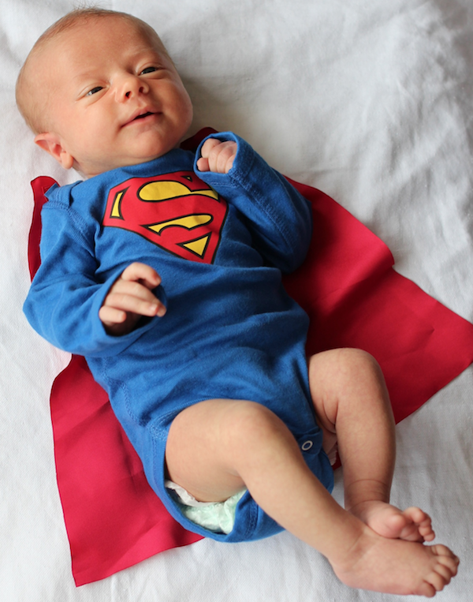

It’s that time of the year, the end, when I tend to get a bit introspective and think about the big things that happened and the milestones reached, and not reached, in these past 12 months. So here it is, more for my own sake than yours, the year-end reflections of aschroder.com.
On Magento
I’ve felt a bit out-of-the-loop within the Magento ecosystem this year, missing the Imagine conference, and not keeping abreast of developments with Magento 2. My involvement has been constrained to working on my own products and services, and periodic blog posts and tweets. As an outsider looking in, I see Magento maturing as a company, the ecosystem is growing. I think the challenge will be maintaining the wonderful developer community around the product as the open source edition takes a back seat to the enterprise sales machine that is ebay/paypal.
2013 has been a year of milestone near misses. This little blog has racked up not quite 1 million pageviews since it’s inception. My new Magento extension MageSend has had nearly 100 sales.
Although it’d have been great to hit these nice round numbers, it’s still a satisfying result on both counts and I’ll elaborate more on my experiences with both below. At the same time, there’s been a lot of good things happening with business, and personal achievements this year, 2013 has been good to me.
November 2013 was the 5 year anniversary, birthday if you will, of aschroder.com. I can say categorically that starting a blog has been the best move I’ve ever made professionally. If you haven’t started one, go do it, right now.
Blogging hones your technical writing skills, builds your own brand and audience, prompts you to do creative or interesting technical things (to feed the content beast) and is a ticket into a psuedo-social club ‘on the internet’, where you can meet and interact with interesting people from all over the world. I’m going to make a real go of writing more in 2014.
My Magento Speed Testing website, magespeedtest.com has had a solid year. In 2013 year I have worked with some of the top Magento hosts to bring a featured host slot to the home page and results pages. Asides from the obvious revenue boost for the site, this highlights to users how their results stand against professional hosting operations such as Crucial or Nexcess.
Merchants, developers and admins have continued to use the site in increasing numbers this year, it’s hugely rewarding to run a site that genuinely benefits people. On top of that, I still have many original subscribers who have continued using the site for years, it means a great deal to me to have such long term support and it’s great to know that a tool I have built is being put to great use in the fight against slow ecommerce stores.
This year I entered new territory, selling copies of my Magento extension for sending emails via Amazon SES called MageSend. I’d previously built subscription services, or simply given away software I’d written as open source. I’d go so far as to say I was philosophically opposed to selling digital copies, as anyone who’s ever heard me prattle on about scarcity and digital things over a beer will attest to.
However, after years of supporting SMTP Pro, I had a good sense for all the pain points merchants face when trying to a) send email and b) get it delivered to customers. A subscription email service though appealing, would amount to reselling Amazon SES, I didn’t want to be in that business. So instead MageSend distilled all the things I learned about ecommerce email into a single piece of software. Sales have been fairly consistent each week and I’ve racked up nearly 100 copies sold – so it’s been a very encouraging foray into software sales. The model works well for me despite my initial apprehension, and I intend to release 1-2 more extensions in related areas in 2014. The key it seems is ensuring the extension and supporting documentation is good enough to keep support requirements to a minimum – which makes it better for me, and easier and less time consuming for my customers.
On Business
World Wide Access has continued to grow and expand, we’ve now got more suppliers than ever in more countries than ever. Behind the scenes, we’ve migrated our businesses in several countries to Xero, and in the process have been working on some Xero integration software, which I’m looking forward to releasing publicly early in 2014. Other milestones include being (just) in the list of 50 fastest growing NZ companies, being a finalist for the Entrepreneurs challenge and having been a part of the business for over 5 years.
My own consulting business has grown well this year, with a mixture of more direct consultancy and also increased revenues from software and services. It’s been an interesting year experimenting with some new business models – particularly software sales, I’m looking forward to growing and experimenting with it further in 2014.
Earlier this year I entered the Auckland Startup Weekend, which was something I’d suggest for all developers – taught me a lot about product validation and business modelling.
On Everything Else
Without question the biggest non-technical development in 2013 has been starting a family. The arrival of our son Wolf has brought with it a complete tipping-upside-down effect on life. I think Mr Atwood says it best, when he says “Being a new parent is both terrifying and exhilarating, a constant rollercoaster of extreme highs and lows.”

I wonder what I used to do with my time! It’ll get better, they tell me.
Wolf’s arrival this year (not at all coincidentally) concluded a two year stint as a {gypsy, digital nomad, transient} wherein Cindy and I visited South-East Asia, America, Australia and Europe while maintaining no fixed abode here in NZ. (yes, I know they’re not all countries).
Our travels have been truly fantastic experiences. Meeting so many people and seeing how the world works in big metropolis cities, and small isolated villages. As corny as much of it is, Tim Ferris’s book ‘The four-hour work week’ really opened my eyes to the flexibility of working remotely. I’m very glad I read it. If you’re interested in the idea of travelling, while maintaing a job or business, I suggest you check it out.
This year I tried to run 1000km, a goal which turned out to be a complete disaster, with a knee injury, general laziness and travel providing convenient excuses. I’m going to start 2014 with the same goal, but this time I intend to stick to it. Let’s see how that goes.
As with my last year-long wrap up in 2010, I’d like to note my favorite music shows of the year, it’s a bit of a sign-of-the-times for me. We saw Weezer playing Pinkerton and then a greatest hits set in Melbourne.
My Big Day Out highlight was Sleigh Bells, who are an awesome band to see live. Enjoy.
Looking ahead
I’m looking forward to some new, non-technical challenges in 2014, like sleeping through the night. For 2014 technical goals, I’d like to build a native iOS app, tinker with and write about Magento 2, attend the Imagine conference and release a couple more premium extensions! I’ll be sure to post regularly with updates.
Thanks to everyone who has read, contributed to or supported my blog this year, happy 2013! I look forward to seeing you back in 2014.
Thanks for your insights, really inspiring! And good luck with your little one – the first time will be exhausting, but it’s worth it!
I also read Tim Ferris’ book, and it gave me lots of ideas – unfortunately, traveling around so much tends to get more difficult with children.
Hope to meet you again sometime soon – but probably it will be in 2015, as I won’t be at Magento Imagine in 2014 (it has been set to the same date as Meet Magento Germany, which is more important for me from a business point of view).
Congrats on an amazing 2013 and an adorable mini-superman! 🙂
This is a great review Ashley! Congratulations on becoming a dad, the product sales and the company growth!
Here’s to a very successful 2014!
Mate
What a massive year !
I’ve been a reader for 4 years now, keep it rolling….